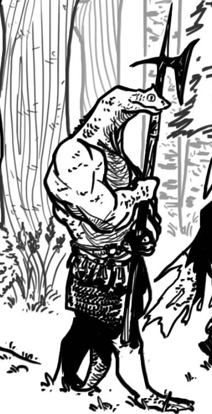
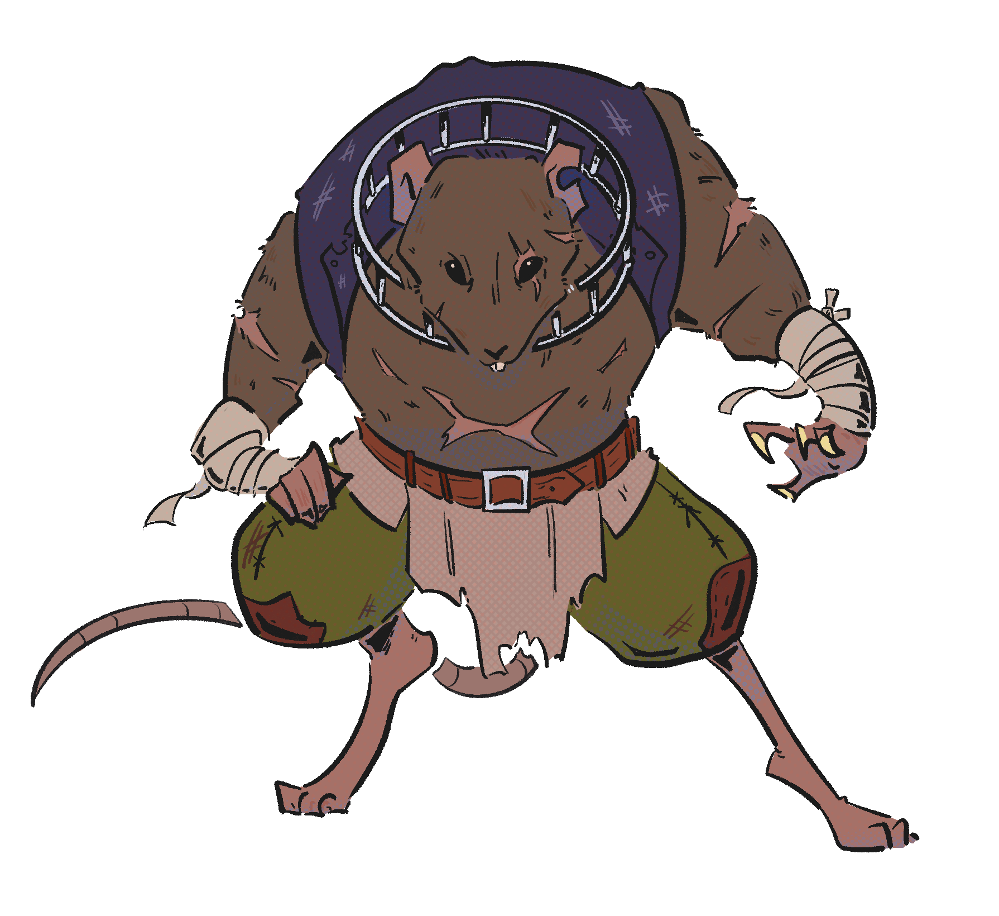

You'll find here a few things, primarily personal opinions and views on D&D as a whole.
Let's layout the most important thing first, what is D&D?
D&D more appropriately called Dungeons and Dragons is a TTRPG where players create characters and embark on adventures in a fantasy world.
I've grown with D&D over the years, starting at highschool around freshman year when I met a few people in Gym class that spoke of this game, previously beforehand my only TTRPG experience was pathfinder, so I was curious what D&D was like.
So what am I gonna expect?
The page you're currently viewing has three DnD characters I've made over the years. It also contains links above to my favorite monsters, a comparison table of the goods and bads of D&D, and my personal opinion on the TTRPG as a whole whilst suggesting a few alternatives just to not burn out.
Here's one of my few favorite D&D characters I've created throughout the years.

His name is Bragraku, He's a lizardfolk Barbarian. A creature of primitive thought and utilizing his rage to kill the threat, a very hardcore survivalist sort of character, dimwitted naturally.
A High Strength and Constitution, yet a low Intelligence and Wisdom score.
Another character I've made and wish for you to know. This one is a more recent character.
His name is Thikut-Dobar, a Dwarf Artificer. Artificers are known for creating magical items and are more intelligent orientated characters, Thikut-Dobar is a prideful Dwarf who managed to help his party through encounters and incidents without much regard to his own safety.
A High Intelligence and Wisdom Score. Yet his Charisma and Dexterity scores are incredibly lacking.
The last character I'll introduce before I let you click any of the links above.

His name is Gapipo, a Ratfolk Barbarian. Similarly to Bragraku, he's dimwitted mostly due to experimentation, sadly I never got to use him yet though he's ready for whichever campaign he's allowed to exist within.
A High Strength and Constitution Score. Yet his Intelligence and Wisdom scores are incredibly lacking like a true barbarian.